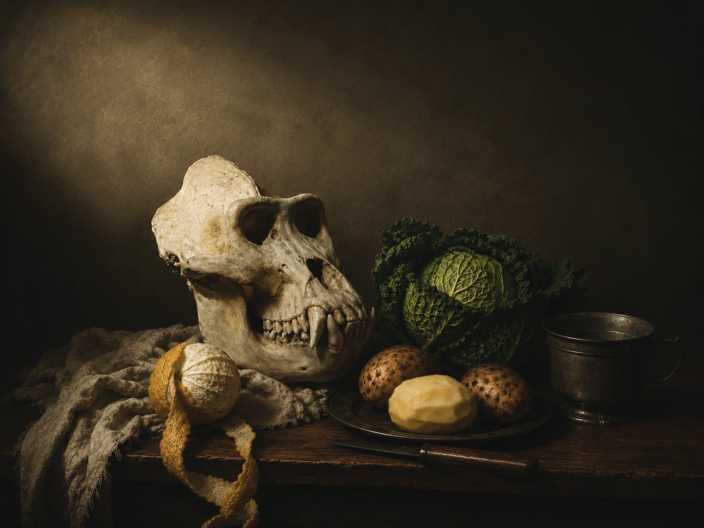

Vladimir Seleznev. Vanitas. Hamburg, Germany
Этот натюрморт с черепом гориллы был создан при помощи искусственного интеллекта. В качестве исходного материала я использовал фотографию черепа гориллы, сделанную мной в одном из немецких музеев естественной истории. Загрузив изображение в нейросеть, я попросил создать на его основе натюрморт в жанре vanitas. Затем получившееся изображение было загружено в другую нейросеть, которой была поставлена задача интерпретировать и описать увиденное.
Получившийся текст прочитывает композицию как размышление о времени, смертности и природе человека. Центральный образ, череп гориллы, становится напоминанием о дарвинистском происхождении человека и конечности любого существования. Остальные предметы такие как капуста, картофель, лимон, нож, кружка и драпировка - складываются в традиционный для жанра vanitas рассказ о быстротечности жизни, бренности материального мира и неизбежности смерти.
Особенность проекта заключается не столько в самом изображении, сколько в процессе его создания и интерпретации. И картина, и её анализ были произведены искусственным интеллектом, тогда как художник выступает инициатором и организатором этого диалога между различными алгоритмами. Работа ставит вопрос о природе авторства, интерпретации и производства смыслов в эпоху ИИ, когда машина способна не только создавать визуальные образы, но и самостоятельно наделять их символическим значением.
В результате возникает своеобразная современная версия vanitas размышление не только о смертности человека, но и о трансформации самого творческого процесса в цифровую эпоху.
- - -